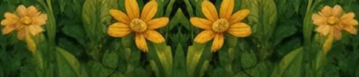

Gratitude habits for little hearts
A minute of thankfulness a day helps children notice the good that is already around them.

Gratitude is a habit of noticing. Children who practise it start to spot the good things that were always there: a warm meal, a kind friend, a sunny morning. It does not need a special occasion or a long routine. One small moment a day is enough to begin.
One thankful thing at dinner
At one meal a day, go around the table and name one thing you are thankful for. Keep it simple and specific: "I am thankful for the rain, because the garden needed it." Specific thanks teach children to notice details, not just repeat "everything".
Keep a gratitude jar
Put a jar on the table with small slips of paper nearby. Whenever someone notices something good, they write or draw it and drop it in. At the end of the week, read a few out loud together. Children love hearing their own notes read back, and the jar makes gratitude visible.
Say thank you properly
Help children say thank you in a full sentence: "Thank you for sharing your crayons with me." A real thank you names what happened and who did it. Practise it together, and say it yourself often — children copy the gratitude they hear.
Notice the ordinary
The best gratitude habit is noticing ordinary good things: clean water, a soft bed, a friend who waited for you. When adults point these out casually — "Isn't this a lovely morning?" — children start to look for them on their own.
Try this tonight
- Tonight, each person names one thing they are thankful for from today — keep it to one sentence.
- Start a gratitude jar together: one note tonight, then add to it through the week.
- Help your child say one full thank you tomorrow, naming what happened and who did it.
Read the book behind these ideas
Little Values, Big Impact explores thirty virtues through a woodland story, so children can learn one idea at a time and come back to their favourites.